一句话：几条像素风的大道（比如樱花道）。你站在路中间，路两边站的都是异性用户，每个人头顶是自己的头像。往前走就是往后翻；看中谁，点头像进她的完整画像，也可以先打个招呼。左上角换场景。游戏只是一个入口，画像页和聊天页还是现有的。
为什么这样排：为了一眼看到的人比列表多得多。一屏能看到大约 190 个头像，其中 100 个左右能看清长相（第 2 组有数字和横竖屏对比）。
手机里的游戏画面是真实截图，不是示意图：我在 design/wuyu/ 里写了一个能跑的小原型，画面都是它截出来的，全部由代码生成、没有用任何外部图片素材。你可以双击 design/wuyu/index.html 自己走一走。原型只是为了出样稿，不是产品代码；人名、话是假数据；头像除了三张示意照片，其余是代码画的像素头像——真实用户这里显示的是他们自己的照片。
标了 我定的 的是没问过你、我按理解先定的；标了 待定 的是接真实用户之前要你定的。
通过一线牵认识并结婚的前 10 对新人，平台送一次双人旅行。
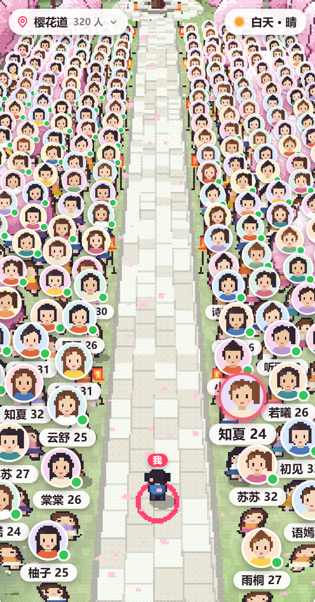
| 屏幕上的头像 | 其中看得清的 | |
|---|---|---|
| 竖屏（左图） | 191 个 | 109 个 |
| 竖屏 · 小屏手机 360×640 | 200 个 | 95 个 |
| 横屏（下图） | 161 个 | 124 个 |
| 横屏 · 小屏手机 640×360 | 154 个 | 117 个 |
「看得清」= 头像直径不小于 22 点，而且被前面的头像挡住不到四成。是原型里的程序数的，不是我估的。
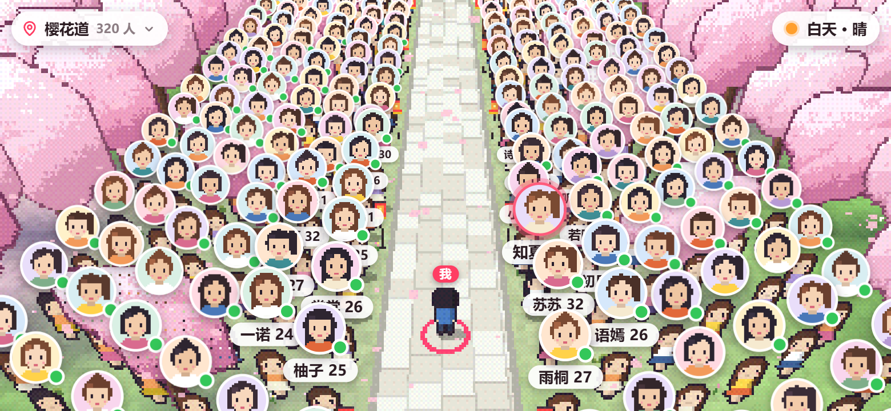
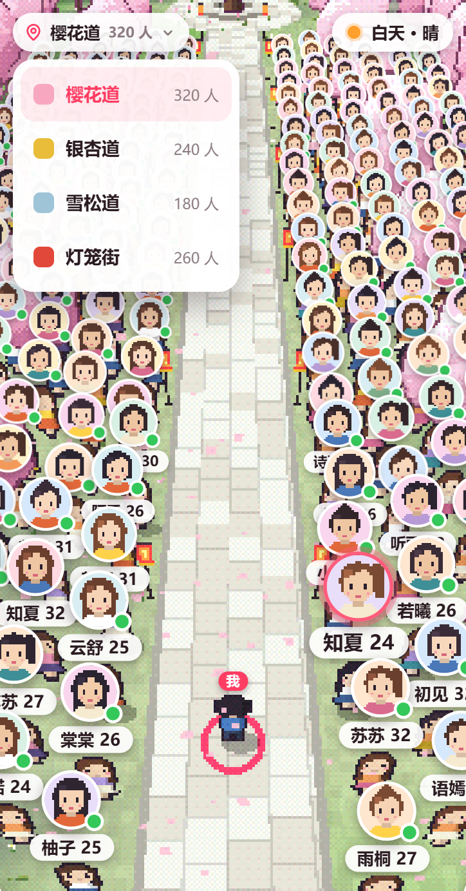
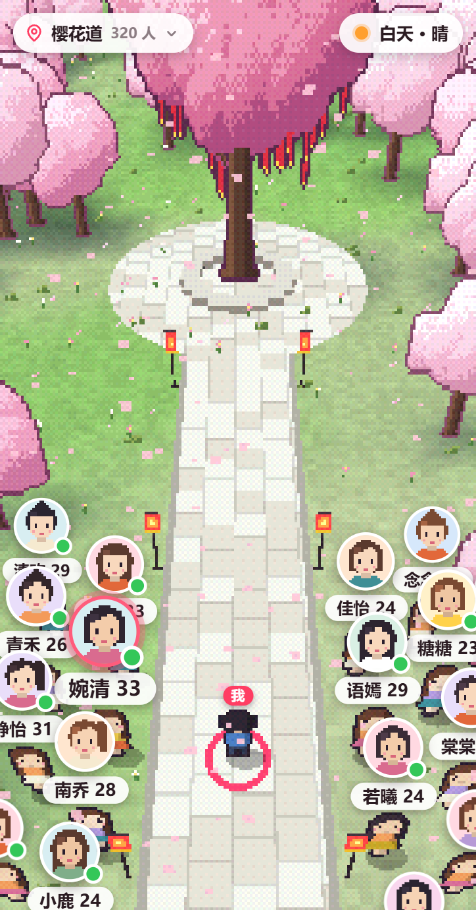
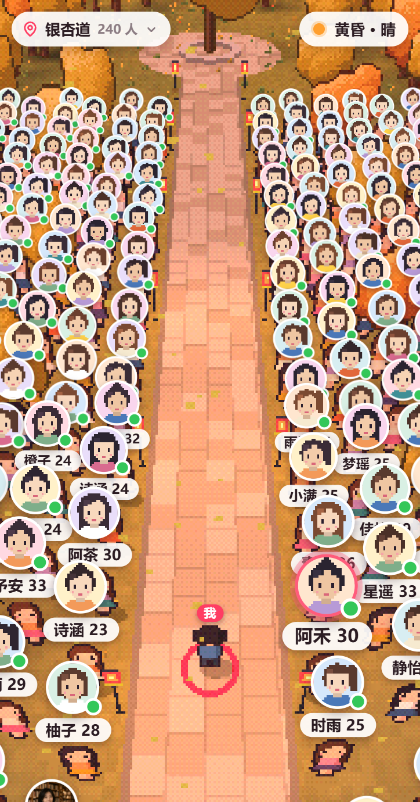
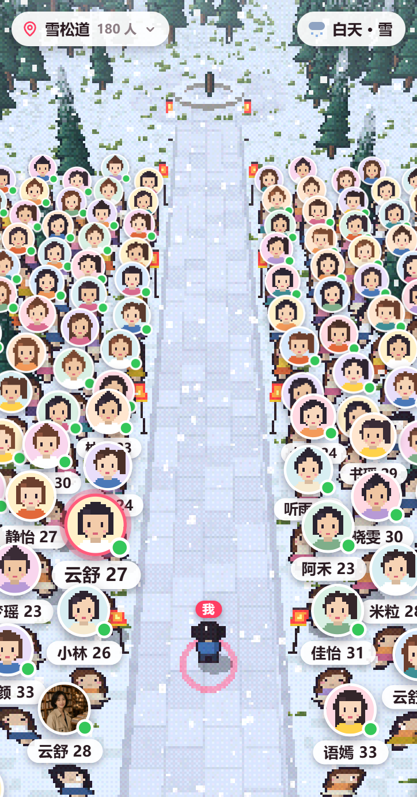
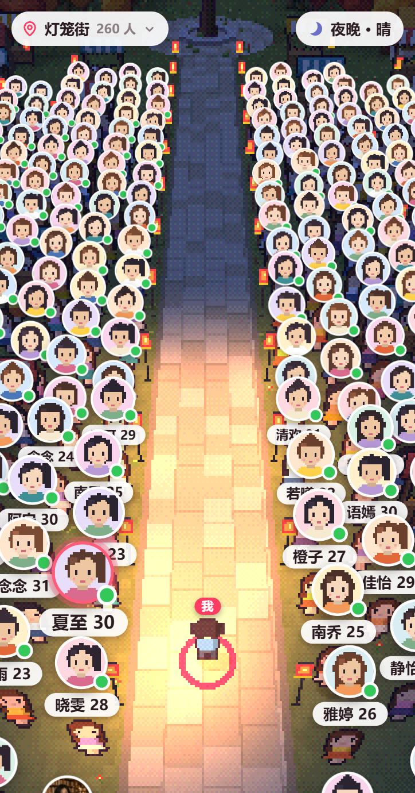
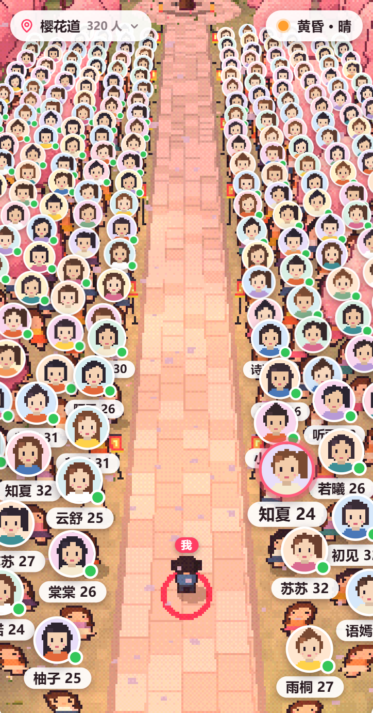
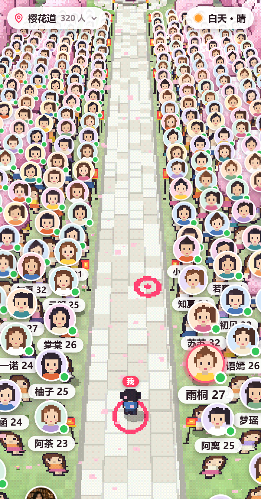
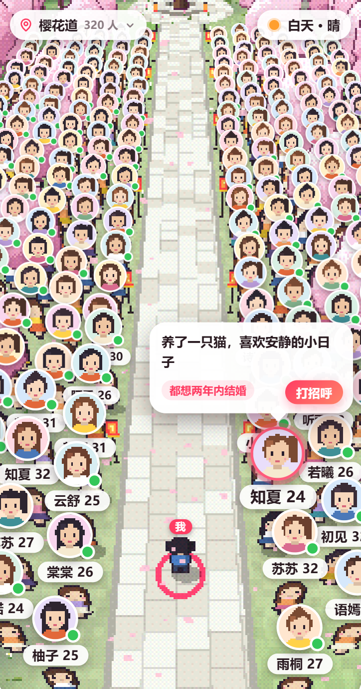
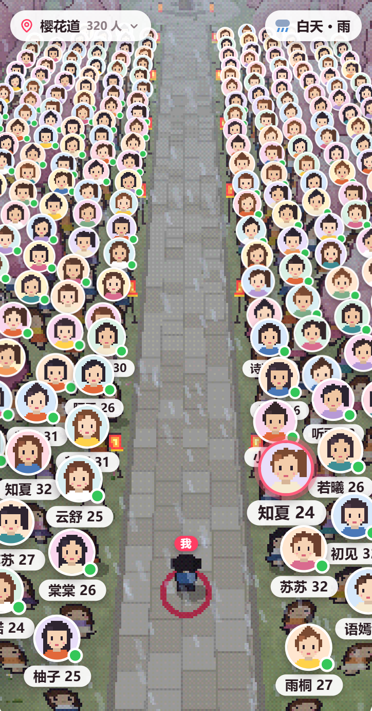
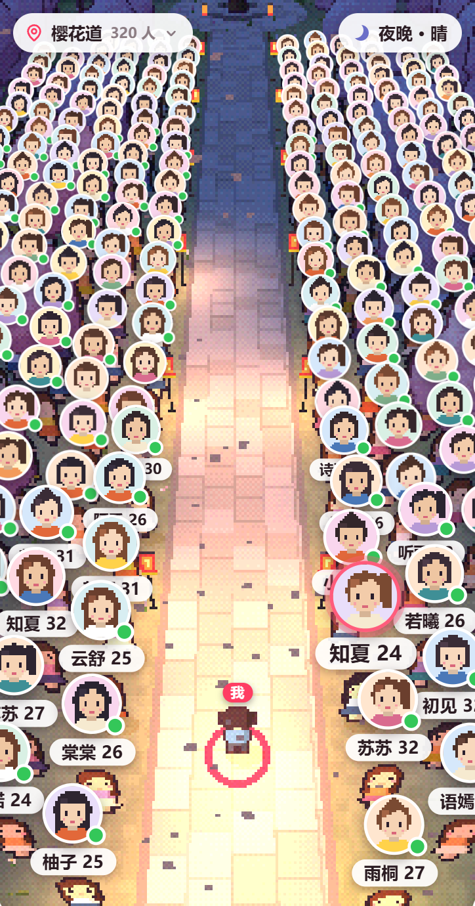